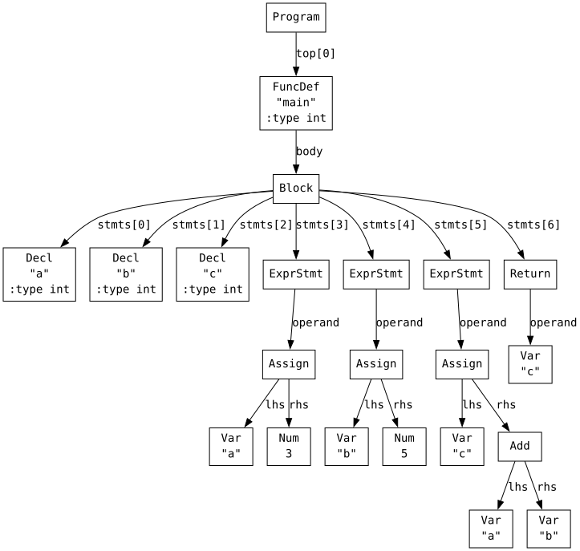
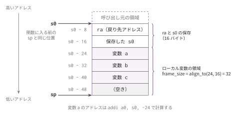

コマ3: 変数・代入・シンボルテーブル
今日のゴール
ローカル変数の宣言・参照・代入を実装する。
コマ2までは、return 1 + 2 * 3; のように、式の中に数値しか登場しなかった。
この回からは、次のようなプログラムを扱う。
int main() {
int a;
int b;
int c;
a = 3;
b = 5;
c = a + b;
return c;
}目標は、変数 a, b, c をスタック上に確保し、代入・参照できるようにすることである。
この回で扱う範囲
対象にするプログラムは、次の形に限定する。
int main() {
int 変数名;
...
文;
...
}扱う機能は以下の通り。
| 種類 | 例 |
|---|---|
| ローカル変数宣言 | int a; |
| 変数への代入 | a = 3; |
| 変数参照 | return a; |
| 変数を含む算術式 | c = a + b * 2; |
| 複数文 | a = 3; b = 5; return a + b; |
この回では、すべての変数を 8 バイト整数として扱う。
int は本来 4 バイトだが、前半では実装を単純にするため、スタック上では各変数に 8 バイトを割り当てる。
if、while、関数呼び出し、ポインタはまだ扱わない。
この回までの言語仕様（EBNF）
この回までに書けるプログラムの文法を、累積の形でまとめる。
記法と最終形の全体像は
language_spec.md の「形式文法（EBNF）」を参照。
scalar_type ::= 'int' /* ポインタはコマ7、char はコマ8 */
obj_type ::= scalar_type
program ::= func_def /* ユーザー定義関数はコマ6 */
var_decl ::= obj_type IDENT ';'
func_def ::= 'int' 'main' '(' ')' func_body /* 一般の関数定義はコマ6 */
func_body ::= '{' { var_decl } { stmt } '}'
stmt ::= expr_stmt
| 'return' expr ';'
expr_stmt ::= expr ';' /* 空文 ; はコマ5 */
expr ::= assign_expr
assign_expr ::= unary_expr '=' assign_expr /* 右結合 */
| binary_expr /* 条件 ? : はコマ4 */
binary_expr ::= unary_expr { bin_op unary_expr }
bin_op ::= '*' | '/' | '%' /* 関係・等値はコマ4、論理はコマ13 */
| '+' | '-'
unary_expr ::= primary_expr
| '-' unary_expr
primary_expr ::= INT_LITERAL
| IDENT
| '(' expr ')'この回までの二項演算子の優先順位（高い順）:
| 優先順位 | 演算子 | 結合 |
|---|---|---|
| 1（高） | * / % |
左 |
| 2 | + - |
左 |
表の読み方はコマ1の「木の形は規則で決まっている」と
language_spec.md の「演算子」を参照。
字句トークン（INT_LITERAL・IDENT など）の定義はどの回でも同じであるため、ここでは繰り返さない。
language_spec.md の「字句トークン」を参照。
AST を確認する
まず、変数を含むプログラムがどのような AST になるか確認する。
python3 scaffold/parse_viewer.py sessions/03_variables/tests/target.cこのプログラムの内容は次の通り。
int main() {
int a;
int b;
int c;
a = 3;
b = 5;
c = a + b;
return c;
}実行すると、次のようなS式が表示される。
(program
(funcdef "main" :type int (params)
(block (decl "a" :type int) (decl "b" :type int) (decl "c" :type int)
(exprstmt
(assign (var "a") (num 3)))
(exprstmt
(assign (var "b") (num 5)))
(exprstmt
(assign (var "c")
(add (var "a") (var "b"))))
(return (var "c")))))
新しく登場するノードは次の通り。
| S式 | Node での表現 |
意味 |
|---|---|---|
(decl "a" :type int) |
ND_DECL |
ローカル変数 a の宣言 |
(var "a") |
ND_VAR |
変数 a の参照 |
(assign A B) |
ND_ASSIGN |
A = B |
(exprstmt X) |
ND_EXPRSTMT |
X; という式文 |
(block ...) |
ND_BLOCK |
{ ... } の中の文列 |
return c; の c も (var "c") として表される。
a = 3; の左側の a も、右辺で値を読む a も、AST上は同じ ND_VAR である。
式と文
ここからは、「式」と「文」を区別する必要がある。
式とは、評価すると結果の値が得られるものである。 得られた値は、別の計算に使い回せる。
例:
1 + 2
a
a + b * 3
a = 10たとえば、1 + 2 は評価すると 3 になる。
その結果は、さらに別の式の一部として使える。
(1 + 2) * 4この式では、まず 1 + 2 の結果 3 が得られ、その値を使って 3 * 4 を計算する。
変数参照 a も式である。
評価すると、変数 a に保存されている値が得られる。
代入 a = 10 も式である。
代入は a に 10 を書き込む処理を行い、さらに式全体の結果として 10 という値を持つ。
そのため、Cでは代入式の結果をさらに使うことができる。
b = (a = 10);この場合、a = 10 の結果は 10 なので、b にも 10 が代入される。
一方、文とは、プログラムの中で実行される処理の単位である。 文そのものは、次の計算に使い回せる結果の値を返さない。
例:
int a;
a = 10;
return a;a = 10 は式だが、; を付けた a = 10; は文である。
このように、式に ; を付けて文にしたものを「式文」という。
式文は、式を評価して副作用を起こすために使う。 ここでいう副作用とは、変数への書き込みなど、値を返す以外にプログラムの状態を変える処理のことである。
a = 10;この文では、代入式 a = 10 の結果の値 10 は、それ以上使われない。
重要なのは、変数 a に 10 が書き込まれるという副作用である。
この回で出てくる文は次の通り。
| Cコード | AST | 意味 |
|---|---|---|
int a; |
ND_DECL |
変数宣言文 |
a = 10; |
ND_EXPRSTMT |
式文 |
return a; |
ND_RETURN |
return文 |
{ ... } |
ND_BLOCK |
複数の文をまとめるブロック |
一方、次のようなものは式である。
| Cコード | AST | 意味 |
|---|---|---|
42 |
ND_NUM |
数値 |
a |
ND_VAR |
変数参照 |
a = 10 |
ND_ASSIGN |
代入式 |
a + b |
ND_ADD |
足し算 |
codegen と gen_stmt
式と文を区別すると、コード生成のメソッドも分けやすくなる。
self.codegen(node) は、式を処理するメソッドである。
式には結果の値があるため、self.codegen(node) が終わった時点で、その値が a0 に入っている、という約束にする。
self.gen_stmt(node) は、文を処理するメソッドである。
文は「処理の単位」であり、次に使い回す値を返す必要はない。
そのため、self.gen_stmt(node) には「結果を a0 に残す」という約束は置かない。
ただし、return 文だけは例外で、関数の戻り値を a0 に入れる必要がある。
| メソッド | 入力 | 役割 |
|---|---|---|
self.codegen(node) |
式ノード | 式を評価し、結果を a0 に置く |
self.gen_stmt(node) |
文ノード | 文を実行する命令列を出力する |
self.codegen_lval(node) |
代入先になる式 | 書き込み先のアドレスを a0 に置く |
これらのメソッドはすべて Codegen03 クラスのインスタンスメソッドである。
それぞれ match node.kind で処理を分けた後、対応する handler method（例: gen_stmt_Return）を呼ぶ。
スケルトンではディスパッチ部分はあらかじめ書かれている。
たとえば、a = 10; はAST上では次のように表される。
(exprstmt
(assign (var "a") (num 10)))外側の exprstmt は文なので gen_stmt() が処理する。
内側の assign は式なので codegen() が処理する。
return a; はAST上では次のように表される。
(return (var "a"))外側の return は文なので gen_stmt() が処理する。
内側の (var "a") は式なので codegen() が処理する。
変数はどこに置くか
コンパイル後のプログラムでは、Python の辞書のような場所に変数を置けるわけではない。 実行時には、変数の値をメモリ上に保存する必要がある。
この回では、ローカル変数をスタック上に置く。
Codegen03 には、次のインスタンス変数が用意されている。
class Codegen03(prev.Codegen02):
def __init__(self) -> None:
super().__init__()
self._locals: dict[str, int] = {}
self._stack_offset: int = 0self._locals は、変数名からスタック上の位置への対応表である（関数ごとにリセットされる）。
例:
{
"a": -24,
"b": -32,
"c": -40,
}この例では、変数 a は s0 - 24、変数 b は s0 - 32、変数 c は s0 - 40 に置かれる。
スタックフレーム
gen_func() は、関数ごとに _reset_func_state() を呼んで必要なフレームサイズを計算する。
addi sp, sp, -(frame_size + 16)
sd ra, frame_size + 8(sp)
sd s0, frame_size(sp)
addi s0, sp, frame_size + 16この後、s0 は関数に入る前の sp と同じ位置を指す。
ローカル変数は s0 から負の方向に置く。

ra と保存した s0 の下にローカル変数が順に並ぶ。
1個目の変数 a は s0 - 24、2個目の b は s0 - 32、3個目の c は s0 - 40 に置かれる。
コマ2 では _reset_func_state() が 0 を返し、フレームサイズが固定だった。
コマ3 では _reset_func_state() を実装し、宣言された変数の数に応じて可変にする。
宣言収集 — 関数本体は Block ノード
フレームサイズを決めるには、関数に入る前に「この関数がローカル変数を何個使うか」を
知っておく必要がある。そのために、コード生成の前に一度だけ AST を見て回り、
Decl を見つけるたびに alloc_local() する。この走査を collect_decls() と呼ぶ。
gen_func() が受け取る FuncDef ノードの body は、文の並びではなく
1 つの Block ノードである（先ほどの S 式の (block (decl "a") ... (return (var "c")))）。
そこで _reset_func_state() は、node.body をそのまま collect_decls() に渡す。
1. self._locals をクリアする
2. self._stack_offset を 0 にする
3. self.collect_decls(node.body) で宣言を収集する
4. align_to(self._stack_offset, 16) を frame_size として返すcollect_decls() は match node.kind で処理を分ける。
node.kind |
処理 |
|---|---|
'Decl' |
collect_decls_Decl(node) — alloc_local で変数を登録する |
'Block' |
collect_decls_Block(node) — stmts を 1 つずつ collect_decls に渡す |
| その他 | 何もしない |
'Block' を開くのは、関数本体そのものが Block だからである。
1 段だけ開けば、関数本体の先頭に並んだ Decl が全部見える。
そこから先へ降りる必要はない。この言語で宣言を書けるのはファイルスコープと
関数本体の先頭だけで、if や while の中には文しか書けないからである
（language_spec.md の「宣言」節）。
collect_decls_Block() はこの 1 段の展開だけなので、スケルトンに書いてある。
入れ子のブロックは新しいスコープを作らないので、関数内のローカル変数は すべて関数全体のフレームへ一律に確保してよい。
alloc_local の役割
self.alloc_local(name) は、新しいローカル変数にスタック上の位置を割り当てるメソッドである。
スケルトンにあらかじめ書かれているが、割り当て方を知らないとオフセットの意味が読めないので、
方針をここに示す。
方針は次の通り。
| 処理 | 内容 |
|---|---|
self._stack_offset を 8 増やす |
変数1個分の領域を確保したことにする |
self._locals[name] にオフセットを登録する |
変数名から位置を引けるようにする |
たとえば、a, b, c を順に割り当てると、次のようになる。
| 変数 | オフセット |
|---|---|
a |
-24 |
b |
-32 |
c |
-40 |
オフセットは s0 からの相対位置である。
rvalue と lvalue
変数を扱うときは、「値がほしい」のか「書き込み先のアドレスがほしい」のかを区別する必要がある。
たとえば、次の文を考える。
a = b + 1;右辺の b は、変数 b に入っている値を読む必要がある。
一方、左辺の a は、値を読むのではなく、代入先として a のアドレスが必要である。
| 場所 | 必要なもの |
|---|---|
右辺の b |
b に保存されている値 |
左辺の a |
a が置かれているメモリアドレス |
この区別のために、次の2つのメソッドを使い分ける。
| メソッド | 役割 |
|---|---|
self.codegen(node) |
式の値を計算し、結果を a0 に置く |
self.codegen_lval(node) |
代入先のアドレスを計算し、結果を a0 に置く |
この回の codegen_lval() は、'Var' だけ対応する最小形でよい。
codegen() と codegen_lval() を分ける設計はここが出発点で、以降ずっと使う
（conventions.md の「守ってほしい設計」節）。
コマ7 で *p を代入先にできるよう 'Deref' の分岐を足して拡張するが、
'Var' の分岐と codegen_Assign() はこの回で書いたものをそのまま引き継ぐ。
変数参照の生成
'Var' を値として読む場合は、次の2段階で処理する。
1. self.codegen_lval(node) で変数のアドレスを a0 に入れる
2. ld a0, 0(a0) で、そのアドレスから値を読み込むたとえば、a が s0 - 24 にあるなら、次のような命令になる。
addi a0, s0, -24
ld a0, 0(a0)1行目で a のアドレスを作り、2行目でそのアドレスに保存されている値を読む。
代入の生成
a = 3; のような代入では、左辺のアドレスと右辺の値の両方が必要になる。
生成パターンは次の通り。
1. 左辺のアドレスを self.codegen_lval() で計算する
-> a0 に左辺のアドレスが入る
2. 左辺のアドレスをスタックに退避する
3. 右辺を self.codegen() で計算する
-> a0 に右辺の値が入る
4. 退避していた左辺のアドレスを a1 に戻す
5. sd a0, 0(a1) で、右辺の値を左辺のアドレスへ保存する代入後、a0 には右辺の値を残しておく。
Cでは、代入式 a = 3 自体の値は 3 である。
gen_stmt の役割
self.gen_stmt(node) は、文ノードを受け取り、match node.kind で種類ごとに handler を呼ぶ。
| ノード種別 | 呼ばれる handler | 処理 |
|---|---|---|
'Decl' |
gen_stmt_Decl |
変数宣言。領域確保は宣言収集で済んでいるため、ここでは何もしない |
'ExprStmt' |
gen_stmt_ExprStmt |
node.operand を self.codegen() する |
'Return' |
gen_stmt_Return |
node.operand を self.codegen() し、戻り値を a0 に置く |
'Block' の処理（body.stmts を順に gen_stmt()）はコマ2 の _emit_func_body がすでに行っている。
スケルトンでは dispatcher 部分があらかじめ書かれており、handler だけが TODO になっている。
編集するファイル
mycc.py
コマ2 の Codegen02 を importlib で継承した Codegen03 を実装する。
コマ2 で埋めた TODO（_codegen_binary_value、codegen_Neg、codegen_Add 〜 codegen_Mod、
gen_stmt_Return、_emit_func_prologue / _emit_func_body / _emit_func_epilogue）は、
importlib の継承でそのまま引き継がれる。この回で書き直すものは無い。
| 実装対象 | 役割 |
|---|---|
codegen_lval_Var(node) |
代入先のアドレス（s0 + offset）を a0 に置く |
codegen_Var(node) |
左辺値アドレスを取得後 ld で値を読む |
codegen_Assign(node) |
左辺のアドレスを保存 → 右辺計算 → 保存 |
gen_stmt_Decl(node) |
何もしない（初期化子はなく、領域確保は宣言収集で行う） |
gen_stmt_ExprStmt(node) |
式文を処理 |
collect_decls_Decl(node) |
alloc_local を呼ぶ |
_reset_func_state(node) |
関数ごとに変数表を初期化し、node.body を collect_decls に渡して frame_size を計算 |
次のものはスケルトンにあらかじめ書かれている（実装対象ではない）。
align_to()、alloc_local()、lookup_var()codegen()/gen_stmt()/codegen_lval()のディスパッチcollect_decls()のディスパッチとcollect_decls_Block()（関数本体のBlockを 1 段開くだけの処理）
tests/
| ファイル | 内容 | 期待値 |
|---|---|---|
target.c |
a = 3; b = 5; c = a + b; return c; |
8 |
reassign.c |
x = 10; y = x * 2 + 3; x = y - x; return x; |
13 |
init.c |
int a; int b; int c; a = 3; b = 5; c = a * b; return c; |
15 |
chain_assign.c |
a = 5; b = a; a = b + 1; return a; |
6 |
single.c |
1変数への代入と参照 | 対応する .ans を参照 |
add_vars.c |
複数変数の加算 | 対応する .ans を参照 |
expr_chain.c |
変数を含む式の連鎖 | 対応する .ans を参照 |
multi_expr.c |
複数変数と複数式 | 対応する .ans を参照 |
many_locals.c |
6変数の総和 | 21 |
eight_locals.c |
8変数（アラインメント境界） | 36 |
minimal.c |
最小関数（ローカル変数なし） | 42 |
代入の前にローカル変数の宣言が必要である。宣言と同時に初期値を書くことはできず、初期値は代入文で設定する。
テスト
python3 scaffold/test_runner.py sessions/03_variablestests/target.c がコンパイルでき、終了コード 8 になれば基本形は成功。
eight_locals.c はフレームサイズが 16 バイト境界に揃っているかを見るテストで、
minimal.c はローカル変数が 0 個でも正しく動くかを見るテストである。
個別に動かす場合は、次のようにする。
python3 sessions/03_variables/mycc.py sessions/03_variables/tests/target.c \
| riscv64-linux-gnu-gcc -x assembler -static - -o out
qemu-riscv64 ./out
echo $?注意
この回では、同じ関数内で同じ名前の変数を2回宣言するケースは扱わない。
コマ3 ではローカル変数の数に応じて可変フレームを使う。
_reset_func_state() で collect_decls(node.body) を呼び、align_to(self._stack_offset, 16) で 16 バイト境界に調整する。
ここで作った _reset_func_state() と collect_decls() の形は、以降のコマでもそのまま使う。
生成したアセンブリのフレームサイズやオフセットを1命令ずつ追いたいときは、RV64 シミュレータ に貼り付ける。
この回の完成形に相当する OCaml 版参考実装が ../../workbook/ocaml/README.md にある。完成相当の実装なので、まず自分の実装方針を検討してから確認すること。